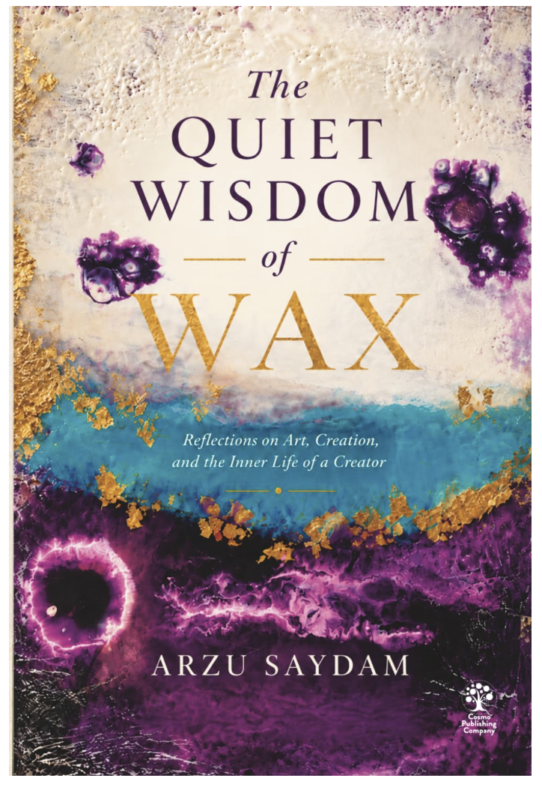

Yazar | Enkaustik SanatçıAuthor | Encaustic Artist
Gözlem, Söz
ve Sanatla Bir ÖmürA Life of Observation,
Words, and Art
Hayatı hep merak ettim.I have always been curious about life.
İnsanları, seçimlerini, ilişkilerini ve çoğu zaman sorgulamadan kabul ettiğimiz şeyleri.About people, their choices, their relationships, and the things we often accept without questioning.
Bazen cevapları bahçemde bulurum. Bazen bir sohbette. Bazen erimiş balmumuyla çalışırken; renklerin ve dokuların, hiç planlamadığım biçimler aldığını izlerken.Sometimes, I find answers in my garden. Sometimes, in a conversation. Sometimes, while working with molten wax, watching colours and textures take shapes I never planned.
Yazmak ve resim yapmak, bu gözlemleri farklı yollarla keşfetmeme izin verir.Writing and painting allow me to explore these observations in different ways.
Hayatın karmaşık sorularına cevaplarım olduğunu iddia etmiyorum. Doğrusu, yaşlandıkça daha çok sorum oluyor gibi.I don't claim to have answers to life's complicated questions. In fact, the older I grow, the more questions I seem to have.
Kitaplarım ve resimlerim aracılığıyla bu soruların bir kısmını, onlara ilham veren deneyim ve düşüncelerle birlikte paylaşıyorum.Through my books and paintings, I share some of those questions, along with the experiences and reflections that inspired them.
Yaratıcı dünyama hoş geldiniz.Welcome to my creative world.

The Quiet Wisdom of Wax
Reflections on Art, Creation, and the Inner Life of a Creator
Onun The Quiet Wisdom of Wax: Reflections on Art, Creation, and the Inner Life of a Creator adlı kitabı, resmini ve yazısını bir araya getirir; sanatsal ifade ile üreten kişinin iç dünyası arasındaki ilişki üzerine düşünür.Her book The Quiet Wisdom of Wax: Reflections on Art, Creation, and the Inner Life of a Creator brings her painting and writing together, reflecting on the relationship between artistic expression and the inner life of the person creating it.
İlk kitabı The Gentle Wisdom of My Garden — Türkçe baskısıyla Bahçemin Sessiz Bilgeliği — bahçesinde bulduğu sessiz derslere dayanır ve doğal dünyayı gündelik insan deneyimleriyle buluşturur.In her first book, The Gentle Wisdom of My Garden, also published in Turkish as Bahçemin Sessiz Bilgeliği, she draws upon the quiet lessons found in her garden, connecting the natural world with everyday human experiences.
Bahçeden mektuplarLetters from the garden
Ara sıra gelen, aceleye getirmeyen notlar için abone olun — yeni yazılar, mevsimlik düşünceler ve sizi karşılayan ücretsiz bir kısa öykü.Subscribe for occasional, unhurried notes — new writing, seasonal reflections, and a free short story to welcome you.
Bültene katılınJoin the newsletter